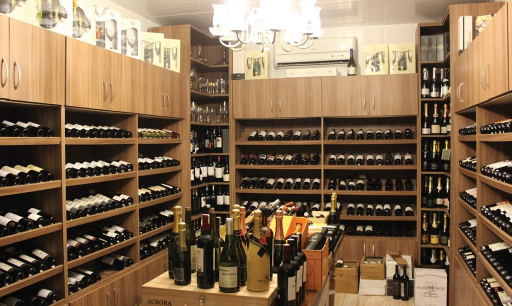

Uma das particularidades relevantes dos vinhos é o risco de sua degradação, ou ao menos alteração de suas características de coloração, aromas e sabor, caso sejam mal armazenados, expostos por muito tempo à luz natural, temperaturas altas, ou mesmo quando expostos a vibrações ou movimentações constantes. Conhecedora desses riscos, a Vinheria Agnello adota cuidados especiais na armazenagem de seus vinhos, em especial com os vinhos de maior valor e vinhos raros, buscando assim garantir a seus clientes mais exigentes a qualidade original de cada garrafa, como recebida de seus fornecedores ou mesmo das vinícolas de origem.
A Vinheria Agnello iniciou suas atividades em São Paulo há mais de 15 anos, contando com apenas uma loja física onde coloca à disposição do mercado uma vasta gama de rótulos de vinícolas nacionais e internacionais.
Selecionar vinhos com curadoria cuidadosa e proporcionar momentos únicos aos nossos clientes.
Qualidade, acolhimento e paixão pelo que fazemos.

Um de seus principais diferenciais é o preparo de seus vendedores para orientar os clientes quanto às características de cada tipo de uva, região, vinícola ou rotulo de vinho, entre outros detalhes relevantes, sugerindo com base nesse conhecimento harmonizações com os mais diversos tipos de alimentos e refeições, e a adequação de vinhos às diferentes ocasiões de consumo
Com uma gestão tradicional e conservadora o sr.Giulio, proprietário da vinheria, resistiu por muito tempo à ideia de entrar no mundo do e-commerce, por julgar esse um meio um tanto “frio”, distante do cliente, e, portanto, não adequado para o padrão de atendimento que gosta de oferecer em sua loja. No entanto agora, para buscar minimizar o impacto negativo da pandemia em seus negócios, Giulio resolveu seguir os conselhos de sua filha Bianca e está disposto a contratar o desenvolvimento de um portal de e-commerce.